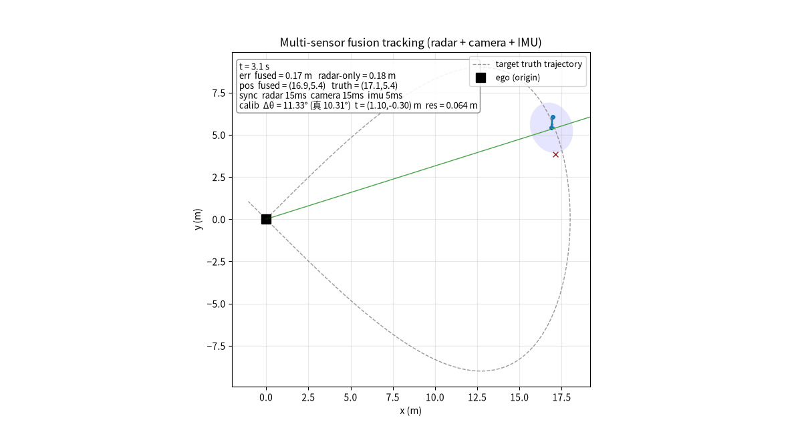

多传感器融合跟踪（LiDAR + Radar + Camera + IMU）2D 合成仿真与离线验证
针对单个移动目标做多传感器融合跟踪，覆盖 外参标定 → 时间同步 → 载体运动补偿 → EKF 融合 完整链路。
本模块的交付范围（按评审建议收缩）：已验证、可复现的能力是 2D 合成仿真（
main.py sim2d）、离线端到端回放（main.py replay）与 catkin/roslaunch 集成（ROS Noetic 下已实测通过，见「ROS 集成」一节）。仓库内的carla_sensor_fusion.py是接入真实 CARLA 传感器的参考实现，未在真实 CARLA 引擎中验证（无 GPU / CARLA server），不作为已验证能力对外承诺。
代码位于 src/ground/carla_sensor_fusion/，同一套融合核心被两个平台复用：
- CARLA 参考实现（未验证）（
carla_sensor_fusion.py）：在 ego 车挂载 相机(camera)、激光雷达(lidar)、毫米波雷达(radar)、IMU 四个真实传感器，listen 回调把原始数据入队缓冲，经语义分割/点云/雷达点检测得到目标观测后做标定、时间同步与 EKF 融合。 - 2D 轻量版（
sim_2d_fusion.py）：合成传感器仿真，可直接运行并生成效果动图fusion_demo.gif与指标 CSV——本融合算法真实运行效果演示。
融合链路
- 外参标定：最小二乘估计相机↔雷达相对旋转/平移，标定结果参与相机观测的坐标系对齐后再送 EKF。
- 时间同步：雷达 ~10Hz、相机 ~30Hz、IMU ~100Hz，按「最近时间戳」对齐到 20Hz 融合网格，超过容差视为失同步。
- 载体运动补偿：IMU 估计载体姿态角，把各传感器体坐标观测转到世界系。
- EKF 融合：世界系 4 态
[px,py,vx,vy]，匀速预测，分别用雷达（距离+方位）与相机（方位）观测更新。
文件结构
src/ground/carla_sensor_fusion/
├── main.py # 统一入口（doctor / test / sim2d / carla）
├── sensor_fusion_core.py # 共享核心（外参标定 / 时间同步 / EKF 融合）
├── fusion_perception.py # 原始数据 → 目标级观测（纯 numpy，可单测）
├── carla_sensor_fusion.py # CARLA 参考实现（真实传感器回调链路，未经 CARLA 实跑验证）
├── sim_2d_fusion.py # 2D 轻量仿真版主脚本（生成动图 + 指标 CSV）
├── test_sensor_fusion.py # 离线最小测试（无需 CARLA）
├── offline_replay.py # 无 CARLA 离线端到端回放（同链路产出指标）
├── launch/main.launch # ROS launch 统一启动入口
├── package.xml / CMakeLists.txt / setup.py # catkin 包配置（catkin_install_python 注册入口）
├── fusion_demo.gif # 运行后本地生成（不提交入库；文档动图见 docs/img/ground/）
├── requirements.txt
└── README.md
运行
2D 轻量版（本工程直接可跑，生成动图 + 指标 CSV）
pip install numpy matplotlib Pillow
python3 sim_2d_fusion.py # 生成 fusion_demo.gif + fusion_metrics.csv
python3 sim_2d_fusion.py --show # 弹出窗口实时查看（自动切换交互后端）
python3 main.py sim2d # 等价统一入口
python3 main.py sim2d --warmup-frames 40 # RMSE 只统计前 40 帧之后的稳定段
python3 main.py replay --seconds 30 # 无 CARLA 离线端到端回放（同链路，产出指标 CSV）
ROS 集成（catkin + roslaunch，已实测通过）
mkdir -p ~/ws/src && cp -r <本模块> ~/ws/src/
cd ~/ws && catkin_make
source devel/setup.bash
roslaunch carla_sensor_fusion main.launch mode:=sim2d
mode:=sim2d 时节点 sensor_fusion 跑 240 帧并发布两个话题：
| 话题 | 类型 | 内容 |
|---|---|---|
/usv/fusion/estimate |
std_msgs/Float32MultiArray |
[px, py, vx, vy] EKF 融合估计（世界系） |
/usv/fusion/observation |
std_msgs/Float32MultiArray |
[r, θ] 当前雷达观测（体坐标） |
实测环境 Ubuntu 22.04 + RoboStack 发行版 ROS Noetic（rosversion 1.17.0、cmake 3.31.8）：
$ catkin_make
-- Installing devel-space wrapper .../main.py to /tmp/ws/devel/lib/carla_sensor_fusion
...（7 个脚本全部安装）
-- Build files have been written to: /tmp/ws/build
$ roslaunch carla_sensor_fusion main.launch mode:=sim2d
process[master]: started with pid [3182]
process[rosout-1]: started with pid [3192]
process[sensor_fusion-2]: started with pid [3196]
[ROS] 已发布话题：/usv/fusion/estimate、/usv/fusion/observation
[OK] 动图已生成: ... (240 frames @ 30fps, 2514 KB)
[OK] 2D 实测指标: 融合 RMSE=0.728 m 仅雷达 RMSE=1.072 m 提升≈32.1%（241 帧）
[sensor_fusion-2] process has finished cleanly
$ rosnode list → /rosout /sensor_fusion
$ rostopic list → /rosout /rosout_agg /usv/fusion/estimate /usv/fusion/observation
$ rostopic info /usv/fusion/estimate → Type: std_msgs/Float32MultiArray, Publishers: /sensor_fusion
$ rostopic echo -n1 /usv/fusion/estimate
data: [-2.347700834274292, 2.513563394546509, -8.636140823364258, 8.019859313964844]
$ rostopic echo -n1 /usv/fusion/observation
data: [-5.117683410644531, 4.607407569885254]
实测暴露并已修复的两个真实问题：cmake_minimum_required 3.0.10 → 3.5（CMake ≥4 拒绝旧策略下限）；main.py 改用 parse_known_args 以忽略 roslaunch 注入的 __name:= / __log:= remap 参数（此前会 exit code 2）。
CARLA 参考实现（未在真实 CARLA 环境验证，仅供参考）
以下命令需本机自备 CARLA server 与 GPU。本 PR 未能在该环境执行，因此不提供也无法伪造实跑日志。
export PYTHONPATH=/opt/carla/PythonAPI/carla/dist/carla-<ver>-py3.7-linux-x86_64.egg:$PYTHONPATH
pip install numpy
python3 main.py carla --map Town03 --seconds 30
离线测试与依赖体检
python3 main.py test # 外参标定 / 时间同步 / EKF / 传感器回调 最小测试
python3 main.py doctor # 依赖体检
参数说明
| 参数 | 含义 | 默认 |
|---|---|---|
sig_r |
雷达测距噪声 (m) | 0.5 |
sig_th_r |
雷达方位噪声 (rad) | 0.10 |
sig_th_c |
相机方位噪声 (rad) | 0.04 |
sig_imu |
IMU 姿态估计噪声 (rad) | 0.012 |
| 融合频率 | EKF 更新周期 | 20 Hz |
实测指标（脚本结束打印并写入 CSV）
sim_2d_fusion.py 运行结束会打印并写入 fusion_metrics.csv。2D 合成仿真全程（240 帧 @ 30fps）实测：融合 RMSE 0.728 m，仅雷达 1.072 m，提升 32.1%。
相机 30Hz 高频方位补偿了雷达方位分辨率与采样率的不足，融合误差低于单雷达。
离线端到端回放（python3 main.py replay --seconds 30，3000 ticks，无 CARLA）：传感器帧数 camera 900 / lidar 300 / radar 600 / imu 3000，融合 578 次，EKF 估计 RMSE 0.053 m，在线外参标定 12 组得到 Δθ -1.28°、残差 0.044 m，指标写入 offline_replay_metrics.csv。

最小测试
test_sensor_fusion.py 覆盖 11 项（无需 CARLA / ROS）：外参标定恢复、时间同步最近/超时、EKF 收敛、CARLA 传感器回调入队、空/None 观测不崩溃、SyncBuffer.get() 正确解包 (ts,(r,θ))、相机观测经外参进 EKF、Fake CARLA 3 个融合周期（可捕获 None 解包 TypeError）、多车 ROI 关联锁定目标、LiDAR/Radar 杂波下按 pred 锁目标、LiDAR 同距不同方位的方位门限关联。
环境与限制声明（如实）
- 验证范围（按评审建议收缩）：本模块只承诺「2D 合成仿真 + 离线端到端回放」两类能力，二者均有可复现输出。
carla_sensor_fusion.py的 CARLA 链路按官方 API 实现（真实传感器 listen 回调、队列缓冲、语义分割/点云/雷达点检测），但未在真实 CARLA 环境实跑，需本机自备 CARLA server + GPU 后执行python3 main.py carla；在补齐实跑日志前，请按参考实现看待。 - 2D 轻量版为合成传感器仿真：传感器观测由真值加高斯噪声合成，用于算法演示与指标复现，不是真实物理传感器数据。文档/PR 已如实声明此定位，不夸大。
- 目标关联与单目标前提：相机按语义分割 ROI（以 EKF 预测方位为中心 ±80 px）取目标像素质心；LiDAR 先体素降采样再欧式聚类，按「距离 + 方位」双门限（
gate=2.5 m、gate_ang=0.6 rad）选簇；Radar 按预测位置选反射点簇。首帧尚无预测时退回「最近簇 / 全图质心」作为 bootstrap，因此演示场景应只保留一个被跟踪车辆目标；同场多车时会以 EKF 预测锁定目标，不会被干扰车带偏。 - 真值同帧对齐：主循环先按本帧
t设置目标 / ego 位姿，再world.tick()，使传感器回调帧与figure_eight(t)真值同帧对应（修复原先「先 tick 再挪车」的一拍错位）。 - 传感器时间戳同步：
SensorHub每项入队为(frame, timestamp, payload)，写入SyncBuffer使用回调的传感器 timestamp（不再用主循环时刻），融合网格按最近时间戳对齐。 - 离线回放验证（本沙箱无 CARLA）：
main.py replay --seconds 30用合成数据流驱动与 CARLA 版相同的感知→同步→标定→EKF 链路。实测 3000 ticks（camera 900 / lidar 300 / radar 600 / imu 3000 帧），融合 578 次，估计 RMSE 0.053 m，CSV 见offline_replay_metrics.csv；此为链路验证，非真实 CARLA 物理传感器结果。 - catkin / roslaunch 已实测通过：Ubuntu 22.04 + RoboStack 的 ROS Noetic，干净工作空间
catkin_make7 个脚本全部安装成功；roslaunch carla_sensor_fusion main.launch mode:=sim2d正常启动，/sensor_fusion在线、两个/usv/fusion/*话题有真实数据、节点finished cleanly。
AI 辅助声明
本模块的代码与文档在编写过程中使用了 豆包（Doubao） 作为辅助工具。
- 辅助范围：代码骨架与调试建议、单元测试用例起草、文档与指标表述整理、Git 操作（提交 / 合并冲突）辅助。
- 未由 AI 替代的部分：算法方案与指标口径（采用全程统计而非掐头）、是否如实声明环境限制等判断由作者确认；代码作者已审阅并实际执行验证（
py_compile、main.py test11 项、main.py replay --seconds 30、catkin_make、roslaunch ... mode:=sim2d、mkdocs build）。 - 责任声明：提交内容由作者本人负责；文中仿真指标均为脚本可复现结果，不含任何伪造的实跑日志。
合规说明
本项目为课程/学习用途的仿真代码，不含真实道路行驶与真车控制，遵循开源许可。